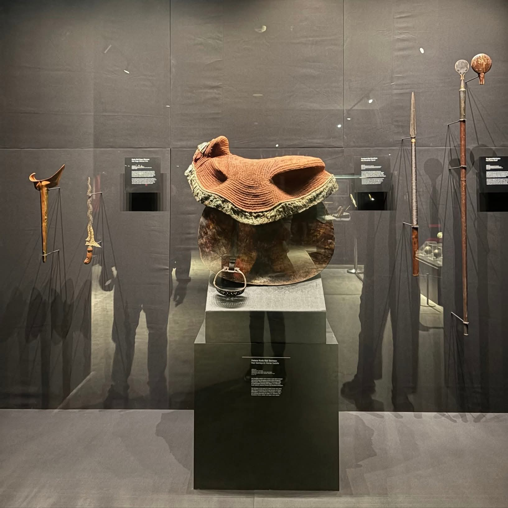

No. 1
Pelana Kuda Kyai Gentayu
Benda Pusaka / 1825–1830Artefak ini merupakan pelana kuda milik Kyai Gentayu, kuda tunggangan kesayangan Pangeran Diponegoro. Pelana ini menjadi saksi bisu ketangguhan dan mobilitas sang pangeran saat memimpin Perang Jawa (De Java Oorlog) melawan pemerintah kolonial Hindia Belanda.
Dibuat dengan rajutan material tradisional yang kokoh, pelana ini digunakan secara intensif sepanjang kampanye taktik perang gerilya dari tahun 1825, hingga akhirnya disita oleh pasukan Belanda saat masa-masa akhir perang pada tahun 1830.
